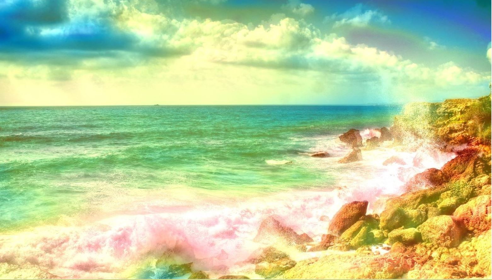

Computer vision - Classify landscape photos using CNN
This project explores how to use convolutional neural networks (CNN) on image classification problems,
with only a small dataset available (few hundreds of images in this example). The actual task is as follows:
given a photo of landscape, predict it is a Mountain OR Sea (binary classification).
Again the goal is to develop some guidelines and insights
as how to apply deep learning methods on images.
Models are built using Keras.
Image data
Compared to sequence data (for example, text or time series) which can be stored in 3D tensors
(sample, timestep, feature), image data is stored in 4D tensors - (sample, height width, color_depth) where
the color_depth axis usually has 3 dimensions (for RBG images). For this project, each image is expressed
with an (150, 150, 3) array and images are grouped with a batch size of 10
(as the total number of training sample
is quite small).
The training set contains 400 photos (200 mountains and 200 seas), where both the validation and test set
contain 200 photos (100 mountains and 100 seas). Examples of mountains and seas are shown below. One of
the challenges is that the "mountain" and "sea" class can contain a variety of different types of
mountains and seas, for example, mountains can include rocky mountain, snow mountain, etc and seas
usually contain waves, beaches, etc. In addition, the images can be taken from various sources so there are
lots of distortions in the photos (for example, different illuminations and angle of viewpoints).
For computer vision problems, these challenges are very typical - models need to be very robust to different
distortions and be able to learn the variety types of objects in a given class.


Convolutional Layer v.s. Dense Layer
The key difference between a convolution layer and a dense layer is that convolution layers learn local
patterns (each block of hidden units look at only a small area of the picture) whereas dense layers (fully
connected) learn global patterns (each hidden unit looks at everything of the picture). Learning locally
gives CNN the advantages on images:
1. More data efficient - as the patterns learned are translation invariant
2. Spatial hierarchies of the patterns can be learned - more natural to vision problems
Hyperparameters
The following is a partial list of important hyper parameters specific to CNNs.
- Number of filters (convolution kernels) - extracts the patch of the inputs and computes an output
feature map, each filter encodes some sort of information of the input
- Window size of filters - that is the size of the patches extracted from the inputs for each filter
(in this task all window sizes are selected to be 3*3)
- Window size of pooling layers. Models in this task all use Max-Pooling layers with 2*2 window size.
Pooling layers are important as they help the model to learn spatial hierarchy of features AND
significantly reduce overfitting (by down sampling the feature maps)
Model 1 - Baseline Model
Before building CNN models, a baseline densely connected network model is built. This step
is important as the final CNN model can only be accepted if it can beat the performance of the cheaper and
simpler alternative models. Notice that there is significant overfitting for this model. The test performance
gives an accuray of 74%.
Model 2
Compared to the baseline model which contains 2 dense layers, the first CNN model adds 3 Conv layers
and Pooling layers on top of the 2 dense layers. From the plots below, it can be seen
that the validation performance is slightly better than the baseline model, and there is much less
characteristics of overfitting. An accuracy of 78% is given by the test set.
Error analysis
It is also important to look at how well the model performs on classifying each class (for this
problem it is inappropriate to use recall/precision as the performance metric since no class is more
important than the other). From the confusion matrix below, it can be seen that the model has roughly
the same performance for both classes. Class 0 - Mountain and Class 1 - Sea.
Model 3 - Use Data Argumentation
The best way to reduce overfitting and improve the generalization power of the model is to collect
more training samples, however, in this case it is not possible to get more photos and one way
to substitute this is to ARGUMENT the photos through some sort of transformations on the training
images - this can include rotation, translation, zooming, adding noisy, etc. Examples of argumented
images are shown below.


To see the impact of data argumentation, Model 3 has the same architecture as Model 2. From the plots below,
it can be seen
that the validation performance is MUCH better than that of Model 2, and there is MUCH less
characteristics of overfitting. An accuracy of 88% is given by the test set (10% improvement than
Model 2).
Error analysis
From the confusion matrix below, it can be seen that the model has better
ability to classify correctly a mountain picture than a sea picture (i.e. sea pictures are more likely to be
considered as mountain pictures by the model) - one possible explanation can be that the
argumentation methods
applied are better choices for mountain images than for sea images.
Model 4 & 5 - Using Pre-trainined Model (Feature extraction)
One popular approach to improve the predictive power on small image dataset is to use some
pre-trained neural networks (usually the popular ones that were built for large datasets). For this
problem, the pre-trained VGG16 is downloaded. The idea is to use the representations learned by the
pre-trained model (which already learned much of the spatial hierarchy of features in some images)
to extract features from the training samples. Note that only the convolutional layers (convolutional
base) will be used to extract the features - we want to make the final model specific to the current
problem.
Note that two different models are built:
- Model 4: Without data argumentation (cheaper): running the convolutional base over the training
samples,
and then use the extracted features as input into the dense layers.
- Model 5: With data argumentation (more expensive): first add the dense layers on top of the
convolutional
base, and then running the whole model over the training samples.
The learning curves and confusion matrix on the test set are shown below. Using the test set, Model 4
achieves an accuracy of 95% and Model 5 achieves an accuracy of 95.5% (significant improvement from
Model 3). In addition, the amount of overfitting is also quite small given the high accuracy. This
shows the power of using pre-trained models.
Model 6 - Using Pre-trainined Model (Fine tuning the top layers)
Model 6 uses another approach commonly applied with pre-trained models - jointly training both the top
layers and the dense layers. The idea is that top layers are learning the more abstract representations
and re-train these layers could possibly make them more powerful for the current problem. In this case,
only the top convolutional block is tuned (where in other cases could re-train the top few layers/
blocks). Results are shown below. Note that an accuracy of 96% is achieved on the test set (a very slight
improvement compared to Model 4 & 5).
Visualize & Interpret the ConvNets
Compared to other deep learning models, CNNs are not purely black boxes - in the sense that it is
possible to understand (at least partially) how a ConvNet is learning the representations.
1. Intermediate Activations
This method visualizes what the activations look like from each filter of each convolutional layer.
Note that for this method one has to perform the exercise for many images (as for each image the
intermediate activations will be different), however, it is possible to identify some patterns on how the
activations look like using multiple images. Below shows the intermediate activations (from the
three convolutional layers) for an mountain
image (using Model 3). It can be seen that higher layers are more like the original picture where
the deeper layers are very abstract (possibly capturing the details).
Now the activations for a sea image. Note that the deeper layer (third image) has a black filter - means
that filter is learning nothing about the image (this possibly explains why the model is better at
recognizing mountains than seas - the filters possibly are more powerful for mountain pictures).
2. Filters
For this method one does not need to perform it over different images, as it allows us to see what each
filter in each layer is encoding by displaying the pattern that each filter is encoding. The way to do
this is simple - use GRADIENT ASCENT to maximize the response of the filter (loss function that maximizes
the filter, then use gradient descent to optimize the input to maximize the activations). The patterns
encoded by the first 32 filters in convolutional layer 1 & 2 in Model 3 are displayed as follows.
Again it can be noticed that deeper layer (layer 2) is capturing more detailed information (e.g.
the wave-like texture/linetype and more complex colour patterns).
3. Class Activation Map (CAM)
Like method 1 for this method we need to perform it for each image, but it is quite powerful as it tells
us for the given image why did the model think the image is mountain/sea by locating the most important
areas in the image. In this case, it builds a heatmap of scores using GRADIENT-BASED LOCALIZATION -
weighting input activates different channels and weighting each channel with respect to each class.
The following is an example of the heatmap overlaying on top of two mountain images.
It can be seen that in the second image, the model almost perfectly identifies the mountain in the
picture (brighter colours) where in the first image, the model captures both the mountain at the background
as well as the small house at the front.

Now look at 2 sea images.
It can be seen that in the first image, the model identifies image as a sea because it captures the
big wave close to the beach. For the second image, the model thinks it is a sea as it captures
not only the sky (touching with the sea) but also the small boat in the picture.


Remarks
In case where the model is not performing well, this method allows us to see why the model fails to
correctly classify some images and can let us understand which features are the model is not learning well. As
a result, one way to improve the performance is to obtain more images that focus more on these features
to help the model better learn. Therefore, visualizing ConvNets can be useful tools for error
analysis.
Last updated on Jan 1, 2020